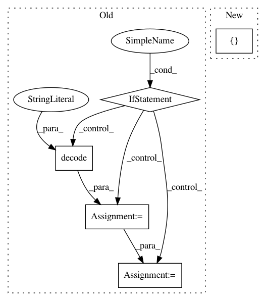

0388130aaa167f8cef5e02c952637a7a425f8959,tensorboard/plugin_util.py,,markdown_to_safe_html,#Any#,78
Before Change
warning = ""
// Convert to utf-8 whenever we have a binary input.
if isinstance(markdown_string, six.binary_type):
markdown_string_decoded = markdown_string.decode("utf-8")
// Remove null bytes and warn if there were any, since it probably means
// we were given a bad encoding.
markdown_string = markdown_string_decoded.replace(u"\x00", u"")
num_null_bytes = len(markdown_string_decoded) - len(markdown_string)
if num_null_bytes:
warning = (
"<!-- WARNING: discarded %d null bytes in markdown string "
"after UTF-8 decoding -->\n"
) % num_null_bytes
string_html = _MARKDOWN_STORE.markdown.convert(markdown_string)
string_sanitized = bleach.clean(
string_html, tags=_ALLOWED_TAGS, attributes=_ALLOWED_ATTRIBUTES
)
After Change
Returns:
A string containing safe HTML.
return markdowns_to_safe_html([markdown_string], lambda xs: xs[0])
def markdowns_to_safe_html(markdown_strings, combine):
In pattern: SUPERPATTERN
Frequency: 3
Non-data size: 5
Instances
Project Name: tensorflow/tensorboard
Commit Name: 0388130aaa167f8cef5e02c952637a7a425f8959
Time: 2020-04-17
Author: wchargin@gmail.com
File Name: tensorboard/plugin_util.py
Class Name:
Method Name: markdown_to_safe_html
Project Name: JasonKessler/scattertext
Commit Name: ce6745434f6b353b6917855165d91a81d6ea842f
Time: 2017-01-03
Author: jason.kessler@gmail.com
File Name: scattertext/viz/HTMLVisualizationAssembly.py
Class Name: HTMLVisualizationAssembly
Method Name: to_html
Project Name: r9y9/wavenet_vocoder
Commit Name: ee5e88bc0446986f6bc74080835e0566856d0e79
Time: 2019-09-07
Author: zryuichi@gmail.com
File Name: setup.py
Class Name:
Method Name: